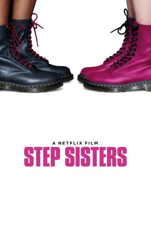
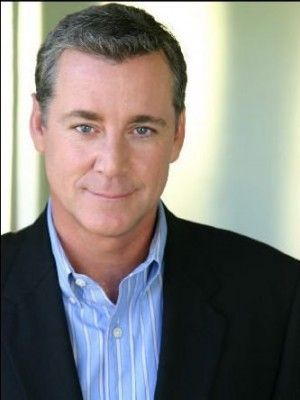

#8134 Step Sisters
 gesehen am 01.02.2018
gesehen am 01.02.2018
 
 IMDB-Wertung: 5.4 / 10
IMDB-Wertung: 5.4 / 10  Tomatometer: 22
Tomatometer: 22  Metascore: 0
Metascore: 0 
Für Jamilah (Megalyn Echikunwoke) könnte es kaum besser laufen: Sie ist Vorsitzende ihrer afroamerikanischen Studentinnenverbindung, Aushängeschild und Captain ihrer Step-Dance-Crew und hat einen guten Draht zum Studiendekan. Jetzt bekommt sie auch noch die Möglichkeit, nach Harvard zu gehen, um dort ein Jurastudium aufzunehmen. Doch die Mädchen der Sigma Beta-Clique kommen ihr dazwischen. Diese beschämen nach einer harten Party-Nacht nämlich die ganze Schule und Jamilah soll helfen, das Image wiederherzustellen: Sie soll den verwöhnten, rhythmusresistenten Weißen Step Dance beibringen und darüber hinaus auch noch den renommierten Steptacular-Contest gewinnen. Um ihre Aufnahme auf Harvard nicht zu gefährden, lässt Jamilah sich darauf ein, doch Chaos ist quasi vorprogrammiert. Auch einige Romanzen bahnen sich an...
Jahr: 2018
Dauer: 108 Minuten
FSK:
Land: USA Studio: NetflixTonspuren: DD5.1 - ,
Untertitel: Deutsch,
Auflösung: 1080p (1920x804) Größe: 5171 MB
Genre: Komödie
Regisseur: Charles Stone III
Drehbuch: Chuck Hayward
Soundtrack: Laura Karpman
Darsteller:
 Megalyn Echikunwoke als Jamilah
Megalyn Echikunwoke als Jamilah- Eden Sher als Beth
- Lyndon Smith als Danielle
- Gage Golightly als Libby
- Alessandra Torresani als Amber
- Nia Jervier als Saundra
- Marque Richardson als Kevin
- Naturi Naughton als Aisha
- Matt McGorry als Dane
- Sheryl Lee Ralph als Yvonne Bishop
 L. Warren Young als Langston Bishop
L. Warren Young als Langston Bishop-  Robert Curtis Brown als Dean Berman
- Ashlee Brie Gillum als Cheryl
- Anjelika Washington als Black Sorority Girl #3
- Lindsey Blackwell als Deja
- Ira Carmichael als Hardware Store Employee
- Sean Michael Weber als Patron #1
- Abraham Clinkscales als Paul
- Tinuke Adetunji als Angry Zeta
- Evan Castelloe als Tyler
- Hannah Jelinovic als White Sorority Neighbor
- Aaron Matthews als Drunk Dude / Phillip
- Jeremy Denzel Williams als RBM #1
- Santana Boykin als College Student (uncredited)
- Qualen Bradley als Show Judge #2 (uncredited)
- Friday Chamberlain als Sorority Sister (uncredited)
 Jamel Chambers als Rho Beta Mu Member (uncredited)
Jamel Chambers als Rho Beta Mu Member (uncredited)- Njoki Coleman als Theta Sister (uncredited)
- Tiffany Colón als Delta Sigma Nu Sister (uncredited)
- Jacob Cooper als Party Goer (uncredited)
 Marisol Correa als Student Step Show Patron (uncredited)
Marisol Correa als Student Step Show Patron (uncredited)- Jaime Dee als Core Rho Beta Mu Brother (uncredited)
- Hunter Deno als Core SBB Sister (uncredited)
- Chanel Downey als Theta (uncredited)
 Jeff Glover als Hardware Store Employee (uncredited)
Jeff Glover als Hardware Store Employee (uncredited) Brian Kayode-Patrick Johnson als Youthful College Professor (uncredited)
Brian Kayode-Patrick Johnson als Youthful College Professor (uncredited)- Sierra D Jones als Sorority Sister (uncredited)
- Shuri Kimborough als (uncredited)
- Destiny Lopez als Enthusiastic Guest (uncredited)
 BreeAnna Marie als Theta Sorority Sister (uncredited)
BreeAnna Marie als Theta Sorority Sister (uncredited)- John McCulland als Core Rho Beta Mu Brother (uncredited)
- Sasha Owens als Theta Sorority Sister (uncredited)
 Mason Pike als College Student (uncredited)
Mason Pike als College Student (uncredited)- Jacob Roberson als Frat Boy (uncredited)
- Ivy Smith als Sigma Beta Sorority Sister (uncredited)
- Chris Steele als Frat Brother (uncredited)
- Jeanette Stout als Twerking Zombie (uncredited)
 Ruben Vidal als DJ (uncredited)
Ruben Vidal als DJ (uncredited)- Jene Moore als Alani
- Asia Alvarez als Black Sorority Girl #2
Datei: X:\2018(N-Z)\Step Sisters (2018, FSK, 1920x804).mkv seit 30.01.2018
Festplatte: HD 2018(G-Z)-2019(A-Z)
 Es gibt insgesamt 172 Filme in der Gruppe '2018(N-Z)'
Es gibt insgesamt 172 Filme in der Gruppe '2018(N-Z)'